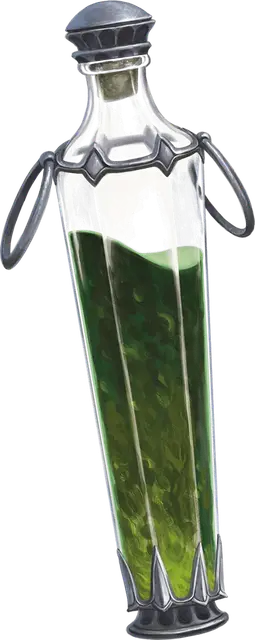

Зелье кулачного боя
Potion of Pugilism
Зелье, необычное

Рекомендованная стоимость 200 ЗМ
В течение 10 минут после выпивания этого зелья каждый совершаемый вами Безоружный удар наносит при попадании 1к6 дополнительного Силового урона.
Густая зелёная жидкость этого зелья на вкус — как шпинат.